CYLINDER BLOCK > DISASSEMBLY |
| 1. INSPECT CONNECTING ROD THRUST CLEARANCE |
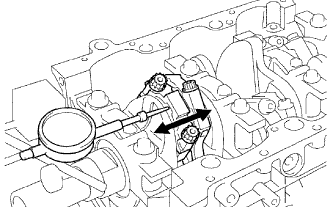 |
Using a dial indicator, measure the thrust clearance while moving the connecting rod back and forth.
| 2. INSPECT CONNECTING ROD OIL CLEARANCE |
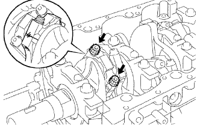 |
Check the matchmarks on the connecting rod and cap to ensure correct reassembly.
Remove the 2 connecting rod cap bolts.
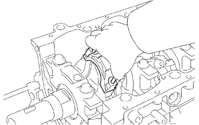 |
Using the 2 removed connecting rod cap bolts, remove the connecting rod cap and lower bearing by wiggling the connecting rod cap right and left.
Clean the crank pin and bearing.
Check the crank pin and bearing for pitting and scratches.
If the crank pin or bearing is damaged, replace the bearings. If necessary, replace the crankshaft.
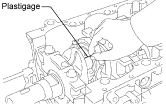 |
Lay a strip of Plastigage across the crank pin.
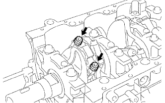 |
Install the connecting rod cap with the 2 bolts.
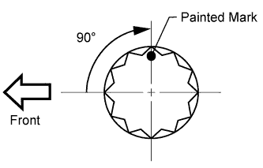 |
Mark the front side of each connecting rod cap bolt with paint.
Tighten the cap bolts 90° as shown.
Check that the painted marks are now at a 90° angle to the front.
Remove the 2 bolts, connecting rod cap and lower bearing.
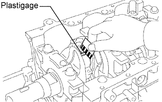 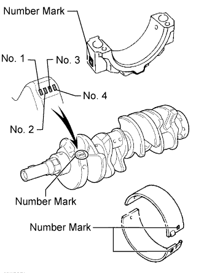 |
Measure the Plastigage at its widest point.
| Item | Connecting Rod | Crankshaft | Use Bearing |
| Number Mark | 1 | 1 | 2 |
| 1 | 2 | 3 | |
| 2 | 1 | ||
| 1 | 3 | 4 | |
| 2 | 2 | ||
| 3 | 1 | ||
| 2 | 3 | 5 | |
| 3 | 2 | ||
| 4 | 1 | ||
| 3 | 3 | 6 | |
| 4 | 2 | ||
| 4 | 3 | 7 |
| Number Mark | Specified Condition |
| Mark 1 | 55.000 to less than 55.006 mm (2.1654 to less than 2.1656 in.) |
| Mark 2 | 55.006 to less than 55.012 mm (2.1656 to less than 2.1658 in.) |
| Mark 3 | 55.012 to less than 55.018 mm (2.1658 to less than 2.1661 in.) |
| Mark 4 | 55.018 to less than 55.024 mm (2.1661 to less than 2.1663 in.) |
| Number Mark | Specified Condition |
| Mark 1 | 51.994 to less than 52.000 mm (2.0470 to less than 2.0472 in.) |
| Mark 2 | 51.988 to less than 51.994 mm (2.0468 to less than 2.0470 in.) |
| Mark 3 | 51.982 to less than 51.988 mm (2.0465 to less than 2.0468 in.) |
| Number Mark | Specified Condition |
| Mark 2 | 1.487 to less than 1.490 mm (0.0585 to less than 0.0587 in.) |
| Mark 3 | 1.490 to less than 1.493 mm (0.0587 to less than 0.0588 in.) |
| Mark 4 | 1.493 to less than 1.496 mm (0.0588 to less than 0.0589 in.) |
| Mark 5 | 1.496 to less than 1.499 mm (0.0589 to less than 0.0590 in.) |
| Mark 6 | 1.499 to less than 1.502 mm (0.0590 to less than 0.0591 in.) |
| Mark 7 | 1.502 to less than 1.505 mm (0.0591 to less than 0.0593 in.) |
Completely remove the Plastigage.
Perform the inspection above for each cylinder.
| 3. REMOVE PISTON AND CONNECTING ROD |
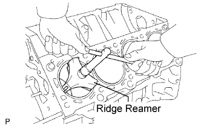 |
Using a ridge reamer, remove all the carbon from the top of the cylinder.
Remove the 16 cap bolts and 8 connecting rod caps.
Push the piston, connecting rod assembly and upper bearing through the top of the cylinder block.
| 4. REMOVE CONNECTING ROD BEARING |
Remove the connecting rod bearings from the connecting rods and connecting rod caps.
| 5. INSPECT CRANKSHAFT THRUST CLEARANCE |
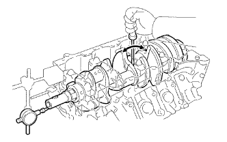 |
Using a dial indicator, measure the thrust clearance while prying the crankshaft back and forth with a screwdriver.
| Item | Specified Condition |
| Standard | 2.440 to 2.490 mm (0.0961 to 0.0980 in.) |
| O/S (0.125) | 2.565 to 2.615 mm (0.101 to 0.103 in.) |
| 6. REMOVE CRANKSHAFT |
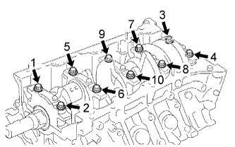 |
Uniformly loosen and remove the 10 crankshaft bearing cap bolts in the sequence shown in the illustration.
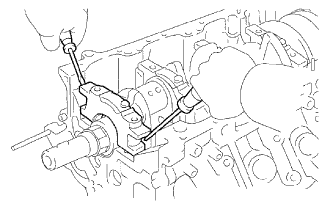 |
Using 2 screwdrivers, gradually pry up and remove the 5 crankshaft bearing caps, 5 lower bearings and 2 lower thrust washers (No. 3 crankshaft bearing cap only).
Lift out the crankshaft.
Remove the crankshaft bearings and upper thrust washers from the cylinder block.
Check each crankshaft journal and bearing for pitting and scratches.
If the journal or bearing is damaged, replace the bearings. If necessary, replace the crankshaft.
| 7. REMOVE CRANKSHAFT PULLEY KEY |
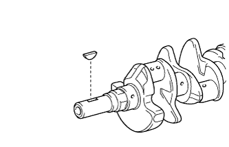 |
Using a screwdriver, remove the pulley key from the crankshaft.
| 8. REMOVE CRANKSHAFT THRUST WASHER SET |
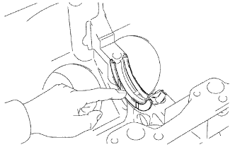 |
Remove the thrust washer set (upper side) from the cylinder block.
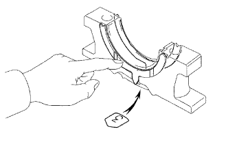 |
Remove the thrust washer set (lower side) from the No. 3 bearing cap.
| 9. REMOVE CRANKSHAFT BEARING |
Remove the crankshaft bearings from the cylinder block and bearing caps.
| 10. REMOVE PISTON RING SET |
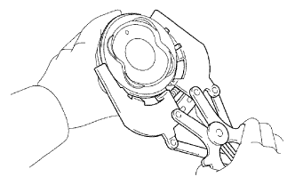 |
Using a piston ring expander, remove the No. 1 and No. 2 piston rings.
Remove the oil ring (2 side rails and expander) by hand.
| 11. REMOVE PISTON SUB-ASSEMBLY WITH PIN |
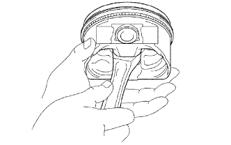 |
Check the fitting condition between the piston and piston pin.
Move the connecting rod back and forth on the piston pin. Check the fitting condition.
If abnormal movement is felt, replace the piston and pin as a set.
Rotate the piston back and forth on the piston pin. Check the fitting condition.
If abnormal movement is felt, replace the piston and pin as a set.
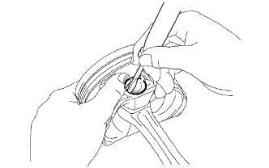 |
Using a small screwdriver, pry out the 2 snap rings.
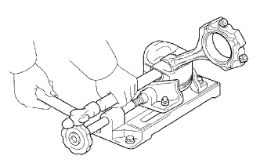 |
Using a plastic-faced hammer and brass bar, lightly tap out the piston pin. Then remove the connecting rod.
| 12. REMOVE NO. 1 OIL NOZZLE SUB-ASSEMBLY |
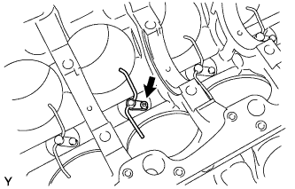 |
Using a 5 mm hexagon wrench, remove the 4 bolts and 4 oil nozzles.
| 13. REMOVE STUD BOLT |